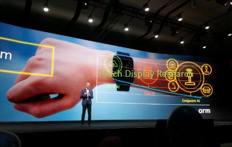
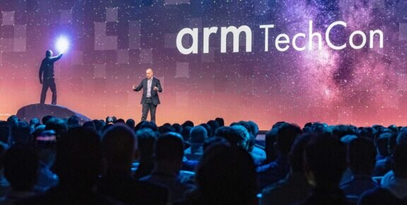
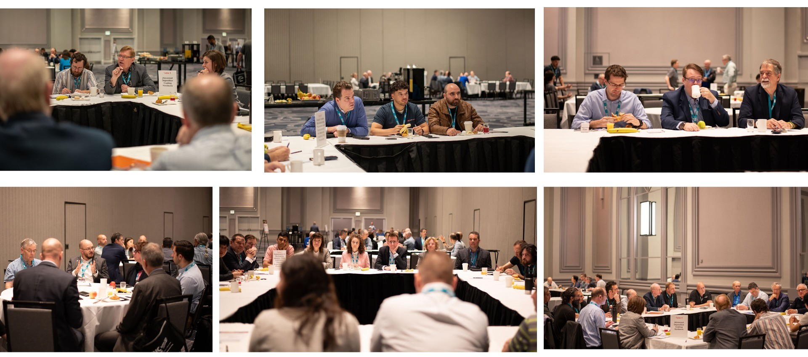
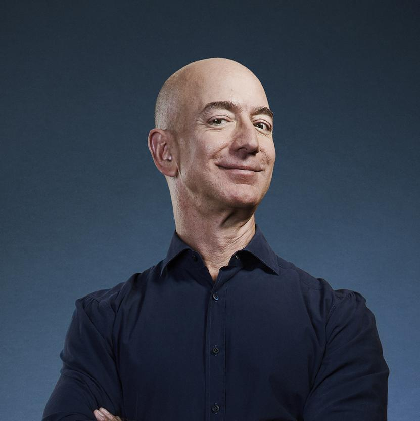
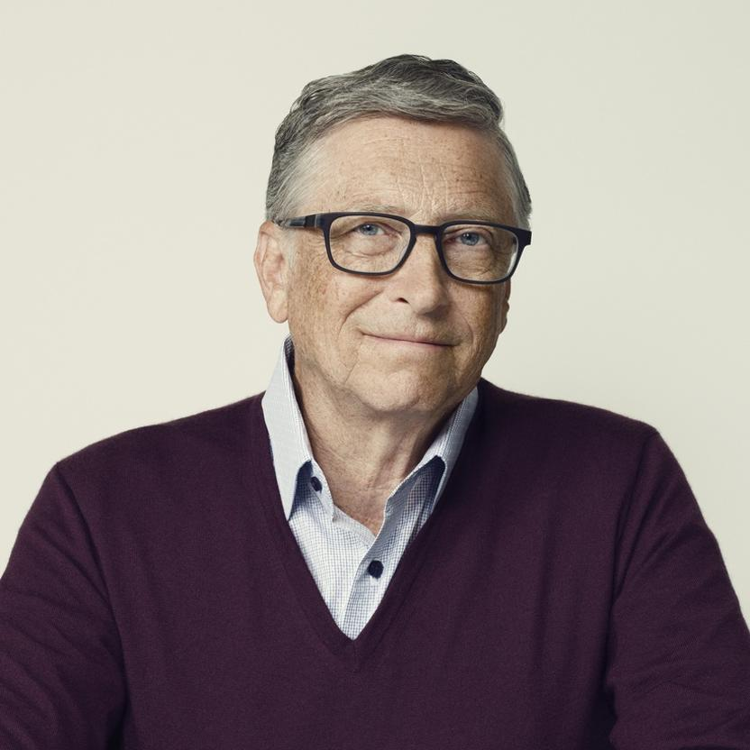
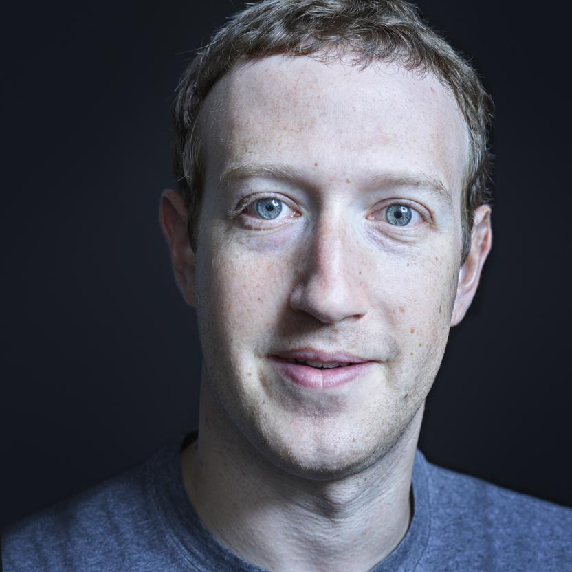

History
TechCon® North America was first held in 1996 in New Orleans, Louisiana. It has since moved about the U.S., accommodating the growing number of delegates and utility hosts. It often includes a regional facility tour of the sponsoring utility. Most recently, the conference averaged 200 in attendance representing 11 various countries and 30 interactive exhibiting corporations. TechCon North America offers a vibrant and unparalleled learning experience with top-notch topics and speakers.
Mission
TechCon® is an all-in-person event with a variety of educational approaches that include technical papers, panels, keynote addresses, training seminars and tracks, expositions, and networking. All jam-packed with education by global experts. Expect to leave with a new network and clear knowledge that will enrich your career and better serve your own utility.
Enjoy TechCon®’s expo reception followed by the dinner and wrap up the conference with our DePartY lunch event which includes a raffle for a $500.00 Southwest Airlines gift card.
Aspect Origin and Evolution of TechCon®

TechCon® 2024 in Texas, USA

TechCon® 2022 in Dubai, UAE

TechCon® 2020 in Addis Ababa, Ethiopia
The Goal and Driving Principles of the Conference.

Past Speakers
Jeff Bezos
Jeff Bezos founded e-commerce giant Amazon in 1994 out of his Seattle garage.
Bezos stepped down as CEO to become executive chairman in 2021. He owns a bit less than 10% of the company.
He and his wife MacKenzie divorced in 2019 after 25 years of marriage and he transferred a quarter of his then-16% Amazon stake to her.
Bezos donated more than $1.1 million worth of stock to nonprofits in 2023, though it's unclear which organizations received those shares
He owns The Washington Post and Blue Origin, an aerospace company developing rockets; he briefly flew to space in one in July 2021.

Bill Gates
Bill Gates diversified his fortune from software firm Microsoft into dozens of holdings, including waste disposal firm Republic Services and tractor maker Deere & Co.
Gates, a computer enthusiast from a young age, dropped out of Harvard to cofound Microsoft with Paul Allen (d. 2018) in 1975, hoping to capitalize on the spread of personal computers.
As of March 2020, when Gates stepped down from the Microsoft board, he owned about 1.3% of the software and computing company's shares.

Mark Zukerberg
A 19-year-old Mark Zuckerberg started Facebook in 2004 for students to match names with photos of classmates.
Zuckerberg took Facebook public in 2012; he now owns about 13% of the company's stock.
Facebook changed its name to Meta in 2021 to shift the company's focus to the metaverse.
In 2015, Zuckerberg and his wife, Priscilla Chan, pledged to give away 99% of their Meta stake over their lifetimes.
